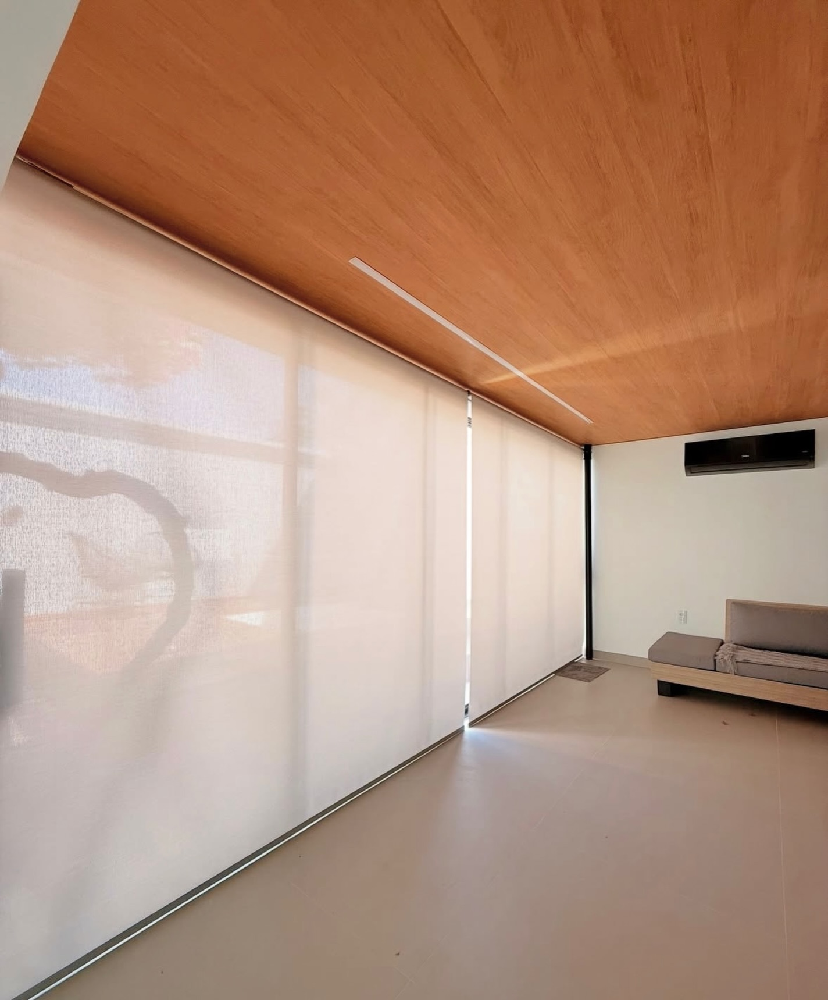

◌
Observe a luz
Em que horário o sol entra? Você quer mais claridade, menos incidência ou privacidade?
NATAL · CORTINAS & PERSIANAS
Cada janela desenha um jeito diferente de sentir o ambiente. Explore referências reais da Decor e encontre inspiração para o seu espaço.

01 / LUZ NATURALGALERIA DA DECOR
Projetos e referências publicados pela própria loja. Toque em uma imagem para ampliar e observe como a luz transforma cada espaço.
Orientação visual para conversar com a equipe sobre o que faz sentido na sua casa ou espaço de trabalho.
Conversar sobre meu espaço ↗Fotos ilustrativas do perfil público da loja, usadas nesta prévia conceitual. A seleção final depende da aprovação da Decor.
UMA REFERÊNCIA PARA COMEÇAR
Em uma publicação da Decor, a cortina rolô tela solar aparece como uma opção que filtra raios UV e reduz o calor sem perder a vista. A solução ideal depende da janela, da incidência de sol e do efeito que você procura.
Perguntar à equipe ↗Informações resumidas de publicação pública da Decor; confirme disponibilidade e especificações diretamente com a loja.SUA ESCOLHA, NO SEU TEMPO
Conte o que você quer melhorar no ambiente. A equipe pode orientar a conversa pelo WhatsApp.
Em que horário o sol entra? Você quer mais claridade, menos incidência ou privacidade?
Uma foto da janela ajuda a iniciar a conversa e apresentar o contexto do ambiente.
Envie sua dúvida e confirme opções, medidas e condições diretamente com a equipe.
CORTINAS & PERSIANAS DECOR
Em Natal, a equipe atende na Rua José do Patrocínio, 3425 — Candelária. Confirme horário e detalhes antes de sair.
R. José do Patrocínio, 3425
Candelária · Natal — RN
Uma casa com a sua luz.
Fale com a Decor ↗